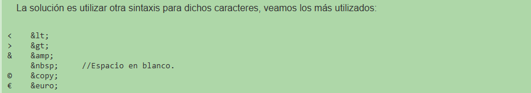

si quieres mas informacion puedes visitar: uso de title
es el titulo que le das a la pagina y aparece en la arte superior
de la ventana del navegador:
si empre busca ponerle un titulo lo sufuciete mente signficativo
sobre lo que muestra la pagina
si quieres mas informacion visita: uso de meta
hasta ahora siempre usamos: < meta charset="utf-8" >,
pero ahora veremos otra propiedades de meta:
< meta name=" nombre de la propiedad " content=" valor de la propiedad ">
para mas imformacion visita: uso de comentarios
la sintaxis para colocar un comentario es:
< !-- estes es un comentario-->
tomar en cuenta que:
De todos modos hay que tener en cuenta que cuando un navegador pide la página a un sitio el servidor envía el archivo HTML completo, es decir con los comentarios. Los comentarios consumen ancho de banda en la transferencia, ya que el archivo es más grande.
en html hay caracteres que no puedes usar directamente ya que el navegador lo confundira
con algun caracter del lenguaje por ejemplo < y >
